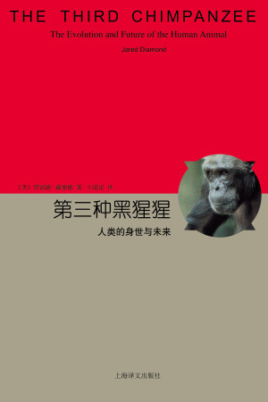

第三种猩猩：人类的身世与未来
[美]贾雷德·戴蒙德（Jared M. Diamond） 著|王道还 译
译者序 究天人之际
绪论
第一部 不过是另一种大型哺乳类罢了
第一章 三种黑猩猩
第二章 大跃进
第二部 奇异的生命循环
第三章 人类性行为的演化
第四章 婚外情的逻辑
第五章 择偶的逻辑
第六章 性的选择与人类起源
第七章 死亡与老化的奥秘
第三部 人为万物之灵
第八章 语言的演化
第九章 艺术的自然史
第十章 农业：福兮祸之倚
第十一章 为什么麻醉自己——烟、酒与毒品
第十二章 深邃的寂寞
第四部 世界征服者
第十三章 人类史的新面貌：世界村
第十四章 问苍茫大地，谁主浮沉
第十五章 印欧语系扩张的故事
第十六章 “原住民”问题：族群冲突
第五部 日中则仄
第十七章 天人合一的迷思与理念
第十八章 哺乳类大灭绝：新世界的故事
第十九章 更大的危机：生态
跋语 前事不忘，后事之师
扩充阅读
贾雷德·戴蒙德：从一名野鸟观察者成长为一位出色的生物地理学家
译者序 究天人之际
绪论
第一章 三种黑猩猩
第二章 大跃进
第三章 人类性行为的演化
第四章 婚外情的逻辑
第五章 择偶的逻辑
第六章 性的选择与人类起源
第七章 死亡与老化的奥秘
第八章 语言的演化
第九章 艺术的自然史
第十章 农业：福兮祸之倚
第十一章 为什么麻醉自己——烟、酒与毒品
第十二章 深邃的寂寞
第十三章 人类史的新面貌：世界村
第十四章 问苍茫大地，谁主浮沉
第十五章 印欧语系扩张的故事
第十六章 “原住民”问题：族群冲突
第十七章 天人合一的迷思与理念
第十八章 哺乳类大灭绝：新世界的故事
第十九章 更大的危机：生态
跋语 前事不忘，后事之师
扩充阅读
贾雷德·戴蒙德：从一名野鸟观察者成长为一位出色的生物地理学家